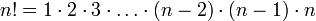
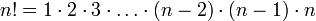

| 1. |  |
| 2. |  |
| Wersja iteracyjna | Wersja rekurencyjna |
|---|---|
int silnia(n)
|
int silnia(n)
|
Poprzednie lekcje miały wprowadzić Cię w strukturę systemu, a także zapoznać z językiem wykorzystywanym w systemie. Mam nadzieję, że dokładnie zapoznałeś się z ww. elementami, gdyż w tym momencie przejdziemy do głównego tematu tego systemu, czyli do nauki rekurencji.
Definicja rekurencji brzmi następująco:
Rekurencja - sposób definiowania funkcji, polegający na umieszczeniu
w treści funkcji odwołań do samej siebie.
Silnią liczby naturalnej nazywamy iloczyn wszystkich liczb naturalnych nie większych niż n. Oznaczamy ją wykrzyknikiem, n! Np. 5!=1⋅2⋅3⋅4⋅5=120. Ponadto przyjmuje się, że dla zera silnia wynosi jeden (0! = 1).
| 1. |  |
| 2. | |
| Wersja iteracyjna | Wersja rekurencyjna |
|---|---|
int silnia(n)
|
int silnia(n)
|
Twoim zadaniem w tej części lekcji jest włączyć program i krok po kroku (za pomocą klawisza F7) przeanalizować te dwie funkcje. Kiedy to zrobisz przejdź do drugiej części lekcji, w której skupimy się na przeanalizowaniu funkcji rekurencyjnej.